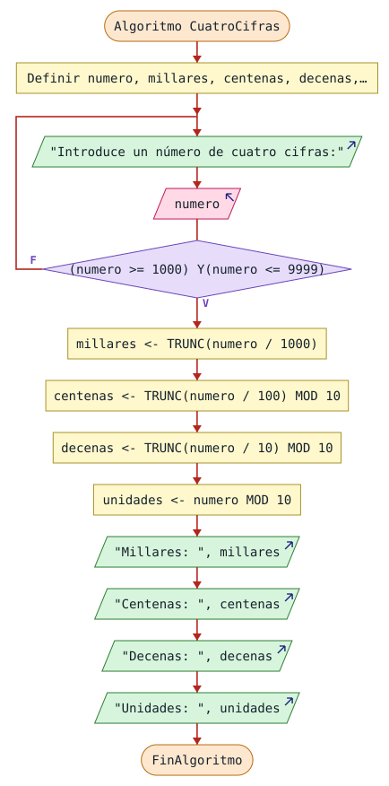
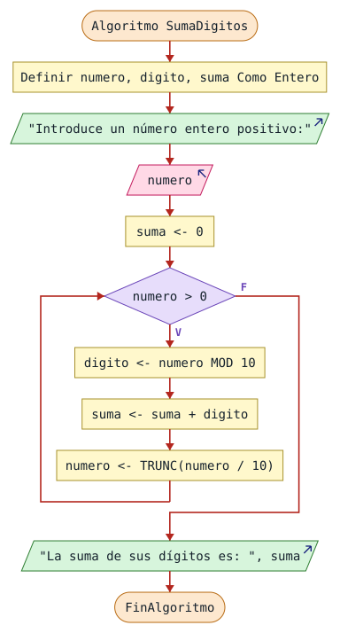
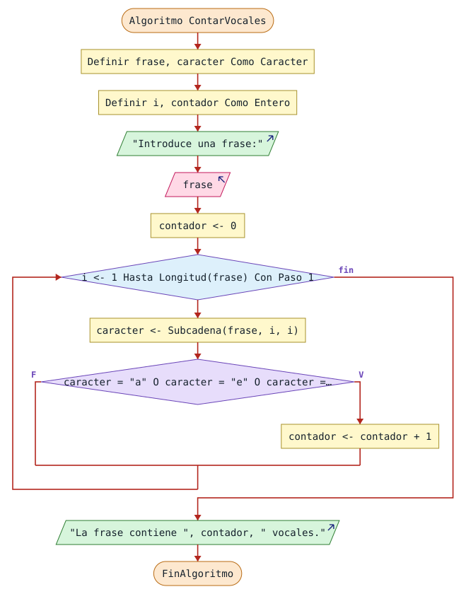

Número primo, Fibonacci, dígitos y cadenas: la parte más exigente de la batería, con su razonamiento y las soluciones disponibles.
Diseña un diagrama de flujo que solicite al usuario un número entero de exactamente cuatro cifras. Si el número introducido no tiene cuatro cifras, el programa debe volver a pedirlo hasta que el dato sea válido. Una vez obtenido un número correcto, el programa debe separar y mostrar cada una de sus cuatro cifras: millares, centenas, decenas y unidades.
Este ejercicio es especialmente interesante porque combina tres ideas en una sola: validación de entrada mediante un ciclo de repetición, separación de dígitos usando división entera y el operador MOD, y la necesidad de diseñar un algoritmo con dos partes claramente diferenciadas. Se recomienda trabajarlo con el profesor antes de que los alumnos lo completen de forma autónoma.
Pista: un número tiene cuatro cifras si es mayor o igual a 1000 y menor o igual a 9999. Para separar las cifras, utiliza la división entera y el operador MOD.
Esta solución no estaba en tu PDF de resueltos; la he escrito en perfil Estricto y comprobado ejecutándola.
El Repetir valida la entrada. Después, TRUNC hace de división entera y MOD se queda con la última cifra.

El mismo algoritmo en PSeInt
Algoritmo CuatroCifras
Definir numero, millares, centenas, decenas, unidades Como Entero;
Repetir
Escribir "Introduce un número de cuatro cifras:";
Leer numero;
Hasta Que (numero >= 1000) Y (numero <= 9999)
millares <- TRUNC(numero / 1000);
centenas <- TRUNC(numero / 100) MOD 10;
decenas <- TRUNC(numero / 10) MOD 10;
unidades <- numero MOD 10;
Escribir "Millares: ", millares;
Escribir "Centenas: ", centenas;
Escribir "Decenas: ", decenas;
Escribir "Unidades: ", unidades;
FinAlgoritmoEscribe un pseudocódigo que lea un número entero positivo mayor que 1 e indique si dicho número es primo o no. Un número es primo si únicamente es divisible por 1 y por sí mismo, es decir, si no tiene ningún divisor entre 2 y él mismo menos 1.
Este ejercicio supone un salto real de dificultad. Para resolverlo correctamente es necesario combinar un ciclo de comprobación, el operador MOD, una variable indicadora o un contador de divisores, y una condición final para determinar el resultado. Antes de escribir el pseudocódigo, debes ser capaz de responder a estas preguntas:
Se recomienda plantear el razonamiento con el profesor antes de comenzar a escribir el pseudocódigo. Una vez acordada la estrategia, los alumnos escriben el pseudocódigo completo de forma autónoma.
Elementos necesarios
Salida esperada. El programa debe indicar claramente si el número introducido es primo o no es primo.
Se decide si un entero mayor que 1 es primo contando sus divisores entre 2 y n-1: si no aparece ninguno, el número es primo. Con 7 el contador queda en cero; con 12 aparecen 2, 3, 4 y 6.
Algoritmo NumeroPrimo
Definir numero, i, divisores Como Entero;
Escribir "Introduce un número entero mayor que 1:";
Leer numero;
divisores <- 0;
Para i <- 2 Hasta numero - 1 Con Paso 1 Hacer
Si numero MOD i = 0 Entonces
divisores <- divisores + 1;
FinSi
FinPara
Si divisores = 0 Entonces
Escribir "El número es primo.";
SiNo
Escribir "El número no es primo.";
FinSi
FinAlgoritmoDiseña un diagrama de flujo que lea un número entero positivo y calcule la suma de todos sus dígitos. Por ejemplo, para el número 1234, el resultado debe ser 1 + 2 + 3 + 4 = 10.
Este ejercicio es especialmente valioso porque obliga a pensar en cómo se pueden extraer los dígitos de un número uno a uno usando únicamente aritmética entera. La clave está en comprender y combinar correctamente dos operaciones: el operador MOD para obtener el último dígito y la división entera para eliminar ese dígito y avanzar al siguiente. El ciclo debe continuar mientras queden dígitos por procesar.
Ejemplo de ejecución
| Número | MOD 10 | Dígito | Resto |
|---|---|---|---|
| 1234 | 1234 MOD 10 | 4 | 123 |
| 123 | 123 MOD 10 | 3 |
La tabla termina aquí en el material: la página está cortada en esa fila.
Esta solución no estaba en tu PDF de resueltos; la he escrito en perfil Estricto y comprobado ejecutándola.
Con 1234: el dígito 4 se suma y queda 123; así hasta que el número llega a 0.

El mismo algoritmo en PSeInt
Algoritmo SumaDigitos
Definir numero, digito, suma Como Entero;
Escribir "Introduce un número entero positivo:";
Leer numero;
suma <- 0;
Mientras numero > 0 Hacer
digito <- numero MOD 10;
suma <- suma + digito;
numero <- TRUNC(numero / 10);
FinMientras
Escribir "La suma de sus dígitos es: ", suma;
FinAlgoritmoEscribe un pseudocódigo que lea un número entero positivo N y muestre por pantalla los N primeros términos de la serie de Fibonacci. La serie comienza con los valores 0 y 1, y cada término siguiente se obtiene sumando los dos anteriores.
La serie de Fibonacci introduce el concepto de algoritmo con estado: en cada iteración, el programa necesita recordar no solo el valor actual, sino también el anterior, para poder calcular el siguiente. Este tipo de razonamiento es nuevo y requiere comprender bien qué variables hay que mantener y cómo actualizarlas correctamente en cada paso del ciclo.
Especificación del pseudocódigo
La especificación termina aquí en el material: la página corta el punto «Proceso».
Esta solución no estaba en tu PDF de resueltos; la he escrito en perfil Estricto y comprobado ejecutándola.
Dos variables guardan el estado: anterior y actual. Se muestra anterior y después ambas avanzan una posición.
Algoritmo Fibonacci
Definir n, i, anterior, actual, siguiente Como Entero;
Escribir "¿Cuántos términos quieres mostrar?";
Leer n;
anterior <- 0;
actual <- 1;
Para i <- 1 Hasta n Con Paso 1 Hacer
Escribir anterior;
siguiente <- anterior + actual;
anterior <- actual;
actual <- siguiente;
FinPara
FinAlgoritmoDiseña un diagrama de flujo que lea una frase introducida por el usuario y cuente cuántas vocales contiene. Al finalizar, el programa debe mostrar el número total de vocales encontradas en la frase.
Este ejercicio introduce una idea diferente a todos los anteriores: en lugar de trabajar con números, hay que recorrer los caracteres de una cadena de texto. Es la primera vez que el alumno trabaja con este tipo de estructura, y obliga a pensar en cómo acceder a cada carácter individualmente, cómo compararlo con un conjunto de valores posibles (las vocales) y cómo acumular el resultado. Este tipo de algoritmo es directamente aplicable en Java con la clase String.
Especificación del diagrama
Esquema: LEER FRASE → RECORRER CARACTERES → ¿ES VOCAL? → INCREMENTAR CONTADOR → MOSTRAR TOTAL.
¿Cómo tratarías las vocales acentuadas (á, é, í, ó, ú)? ¿Y las mayúsculas?
Se cuentan las vocales minúsculas de una frase. En PSeInt la primera posición de una cadena es la 1, por eso el Para va de 1 hasta Longitud(frase) y Subcadena(frase, i, i) devuelve un único carácter.

El mismo algoritmo en PSeInt
Algoritmo ContarVocales
Definir frase, caracter Como Caracter;
Definir i, contador Como Entero;
Escribir "Introduce una frase:";
Leer frase;
contador <- 0;
Para i <- 1 Hasta Longitud(frase) Con Paso 1 Hacer
caracter <- Subcadena(frase, i, i);
Si caracter = "a" O caracter = "e" O caracter = "i" O caracter = "o" O caracter = "u" Entonces
contador <- contador + 1;
FinSi
FinPara
Escribir "La frase contiene ", contador, " vocales.";
FinAlgoritmoEscribe un pseudocódigo que lea un número entero positivo N introducido por el usuario y encuentre y muestre los N primeros números primos. El programa debe ir comprobando candidatos a partir del número 2 y, para cada uno, determinar si es primo. Si lo es, debe mostrarlo y contabilizarlo. El proceso continúa hasta haber encontrado exactamente N números primos.
Este ejercicio combina dos niveles de lógica anidados: un ciclo externo que controla cuántos primos se han encontrado y recorre los candidatos, y un ciclo interno que comprueba si cada candidato es primo. Un número es primo si no es divisible por ningún entero entre 2 y su raíz cuadrada. El alumno debe ser capaz de integrar el algoritmo de comprobación de primos del ejercicio anterior dentro de esta estructura más amplia.
Especificación completa
Preguntas de diseño
Ejemplo de salida (N=5): 2, 3, 5, 7, 11
Dos ciclos anidados: el externo busca candidatos y el interno los comprueba hasta la raíz cuadrada, usando esPrimo como indicador lógico. Con n = 5 salen 2, 3, 5, 7 y 11.
Algoritmo PrimerosNumerosPrimos
Definir n, encontrados, candidato, divisor Como Entero;
Definir esPrimo Como Logico;
Escribir "¿Cuántos números primos quieres mostrar?";
Leer n;
encontrados <- 0;
candidato <- 2;
Mientras encontrados < n Hacer
esPrimo <- Verdadero;
divisor <- 2;
Mientras divisor * divisor <= candidato Y esPrimo Hacer
Si candidato MOD divisor = 0 Entonces
esPrimo <- Falso;
FinSi
divisor <- divisor + 1;
FinMientras
Si esPrimo Entonces
Escribir candidato;
encontrados <- encontrados + 1;
FinSi
candidato <- candidato + 1;
FinMientras
FinAlgoritmoEscribe un pseudocódigo que lea una palabra introducida por el usuario y determine si dicha palabra es un palíndromo. Una palabra es un palíndromo si se lee de igual manera de izquierda a derecha que de derecha a izquierda. Por ejemplo: RADAR, ANILINA, RECONOCER.
Este es un ejercicio de diseño de estrategia algorítmica. Antes de escribir el pseudocódigo, el alumno debe reflexionar y proponer por sí mismo cómo comprobaría si una palabra es igual al revés. No se trata de memorizar un algoritmo estándar, sino de llegar a él razonando. El profesor puede guiar la discusión preguntando: "¿Cómo comprobaríais vosotros si una palabra es igual al revés?" y construir el algoritmo a partir de las propuestas del grupo.
Especificación del pseudocódigo
Ejemplos
| Palabra | ¿Palíndromo? |
|---|---|
| RADAR | Sí |
| ANILINA | Sí |
| RECONOCER | Sí |
| HOLA | No |
| CASA | No |
Estrategias posibles
¿Cómo manejarías palabras con tildes o espacios? ¿Importa si las letras son mayúsculas o minúsculas?
Esta solución no estaba en tu PDF de resueltos; la he escrito en perfil Estricto y comprobado ejecutándola.
Compara el primer carácter con el último, el segundo con el penúltimo, etc., y usa un indicador lógico. Como en la solución de contar vocales, la primera posición de la cadena es la 1.
Algoritmo Palindromo
Definir palabra Como Caracter;
Definir i, n Como Entero;
Definir esPalindromo Como Logico;
Escribir "Introduce una palabra:";
Leer palabra;
n <- Longitud(palabra);
esPalindromo <- Verdadero;
i <- 1;
Mientras i <= TRUNC(n / 2) Y esPalindromo Hacer
Si Subcadena(palabra, i, i) <> Subcadena(palabra, n - i + 1, n - i + 1) Entonces
esPalindromo <- Falso;
FinSi
i <- i + 1;
FinMientras
Si esPalindromo Entonces
Escribir "La palabra es palíndromo.";
SiNo
Escribir "La palabra no es palíndromo.";
FinSi
FinAlgoritmo